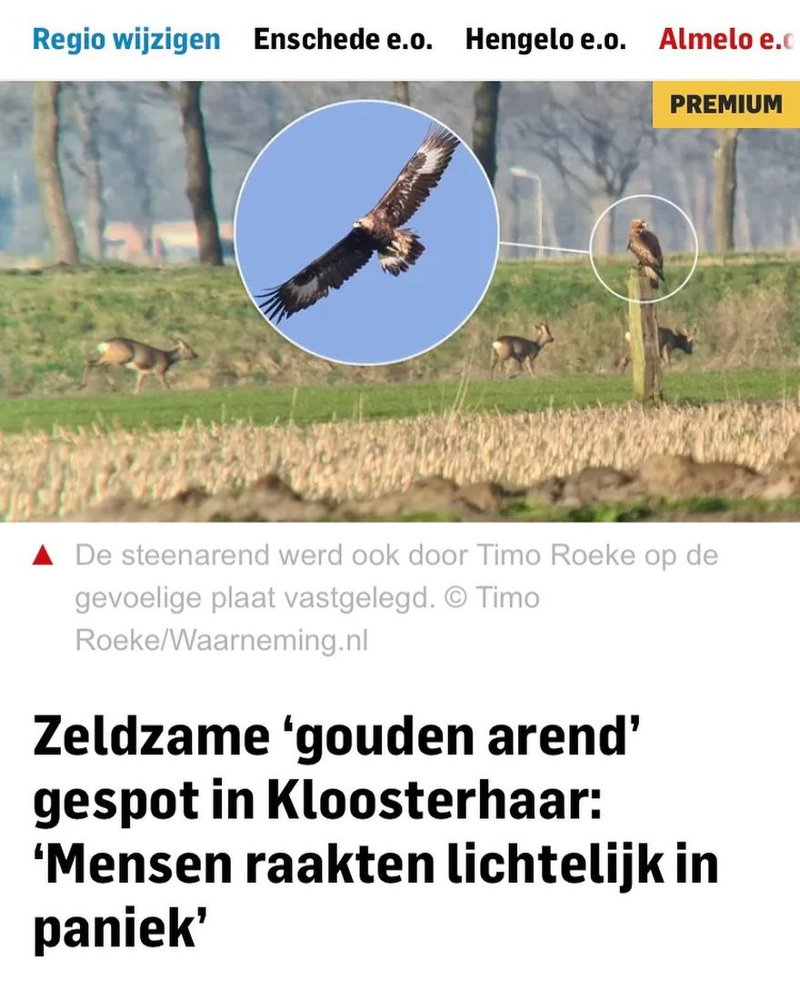
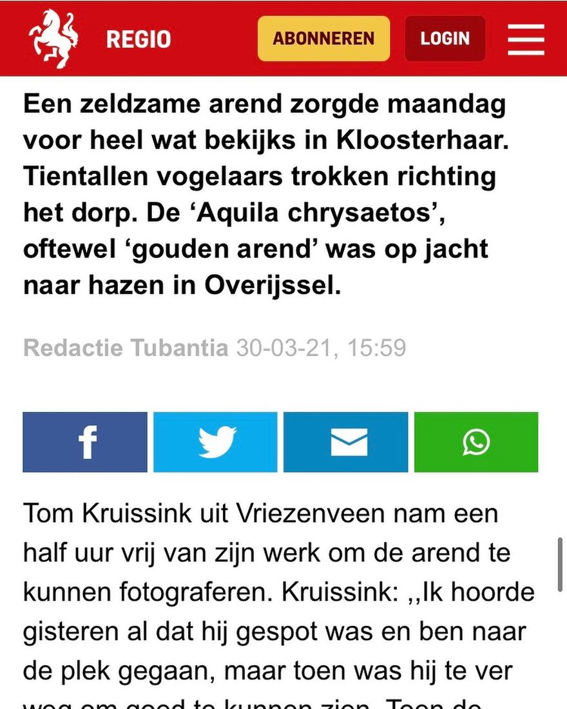
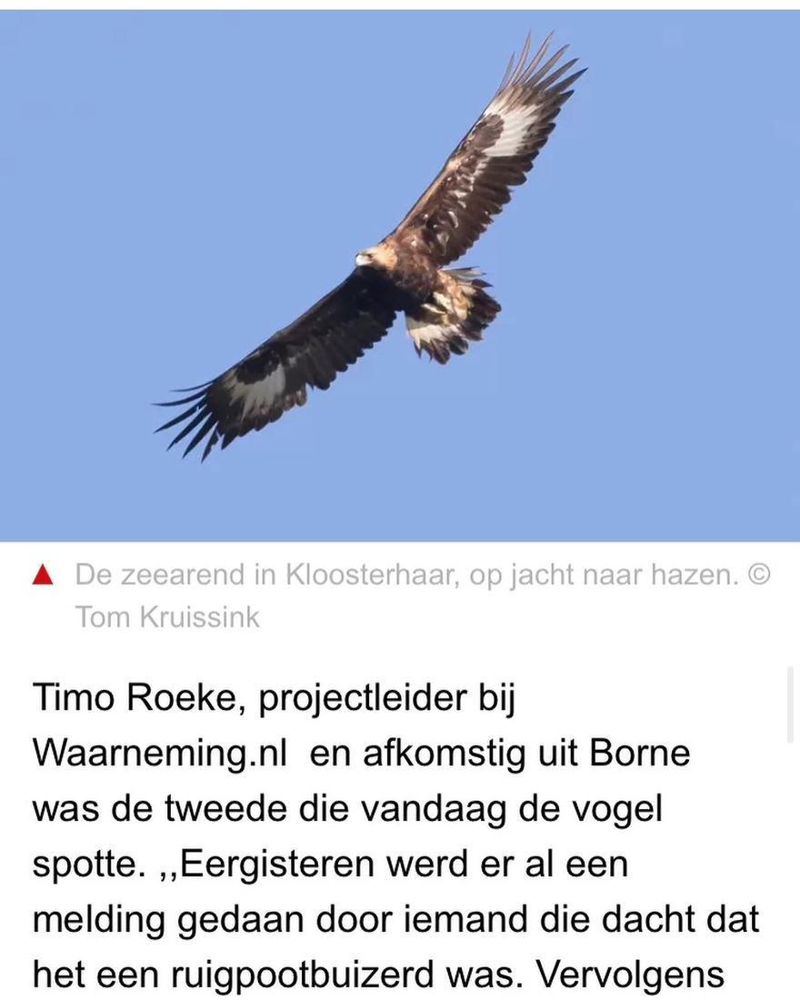
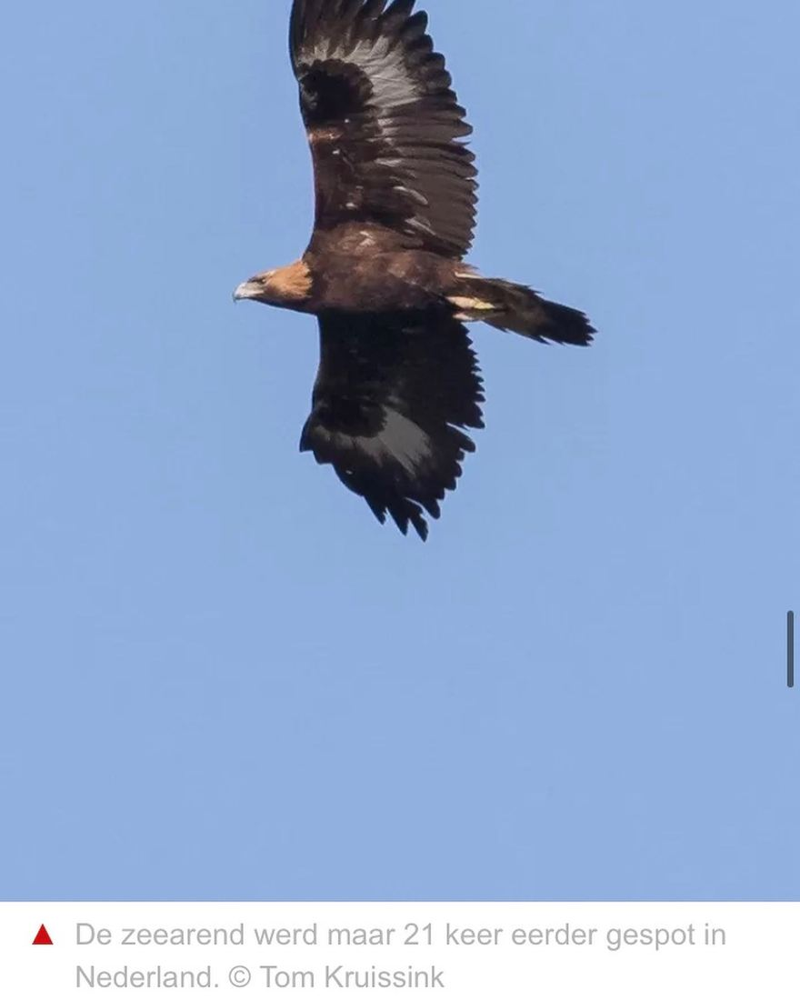
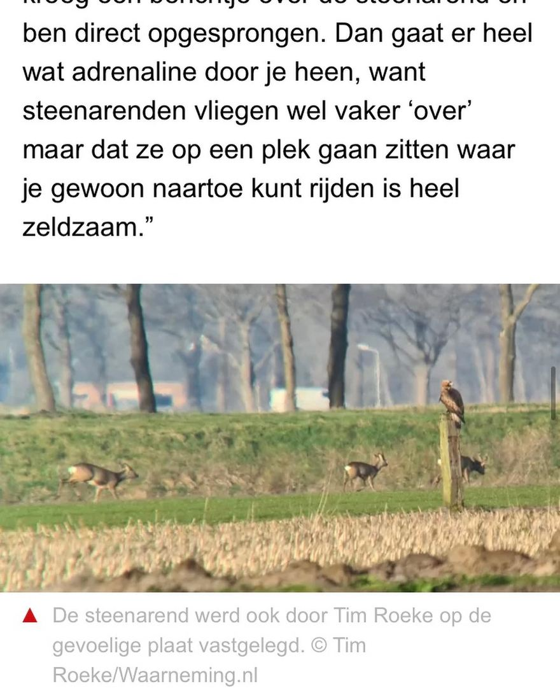
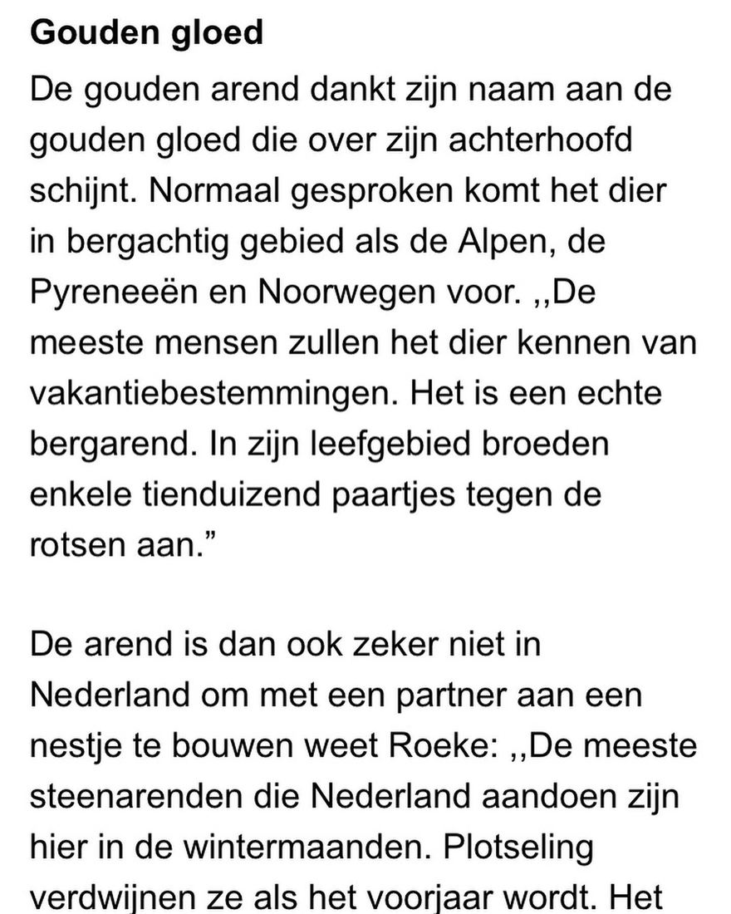
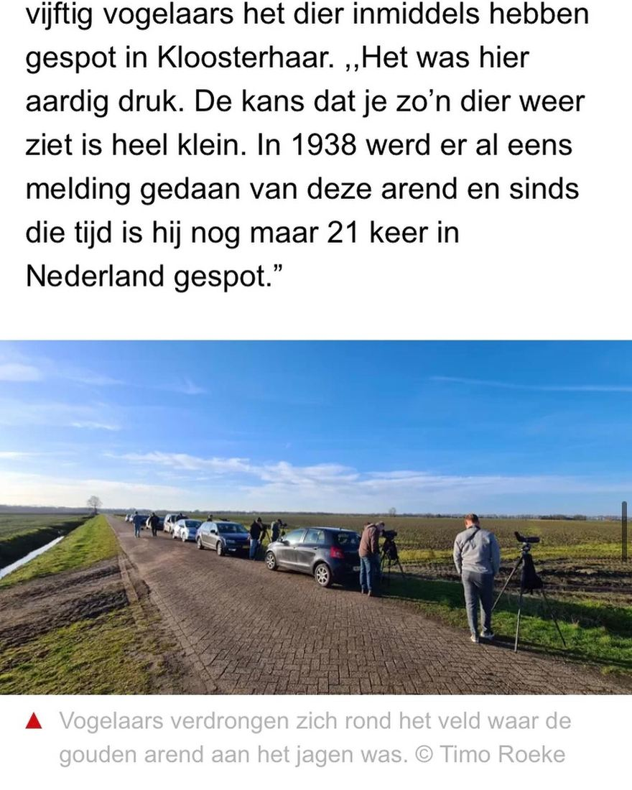

Steenarend, zeearend en gouden arend door elkaar
15 april 2021 · Tubantia
- Op de foto
- Zeearend en gouden arend
- Het ging over
- Steenarend







De afgelopen maand vloog er een Steenarend door Nederland die op verschillende plekken werd teruggevonden. Een uitgelezen kans voor @tubantia_nl om één van de meest verwarrende verhalen te schrijven die we tot nu toe hebben gepost.
De vogel wordt in dit verhaal zowel Steenarend, Zeearend als Gouden arend (de letterlijke vertaling van de Engelse naam van Steenarend, Golden eagle) genoemd. Succes met lezen!